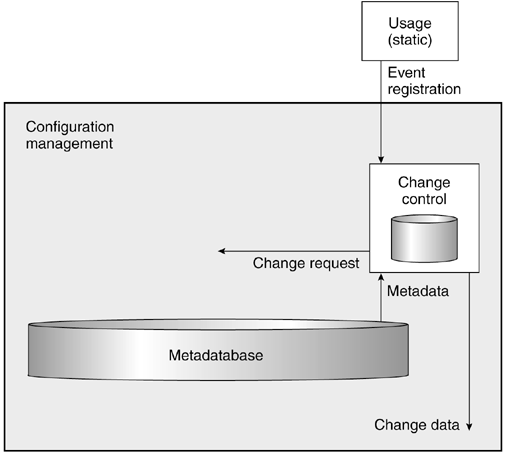
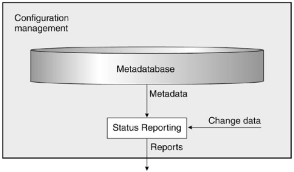

Upravljanje konfiguracijom softvera
Osnove


Fakultet tehničkih nauka u Novom Sadu
Katedra za informatiku
Definicija konfiguracije
- Reč "konfiguracija" potiče od latinskih reči "com" koja znači "sa" i reči "figurare" koja znači "formirati".
- Ova reč se može tumačiti kao "relativno uređenje delova ili elemenata".
Upravljanje konfiguracijom
Proces za uspostavu i održavanje konzistencije funkcionalnih i fizičkih osobina kao i performansi proizvoda u skladu sa zahtevima, dizajnom i operativnim informacijama tokom njegovog životnog ciklusa1.
Disciplina koja se bavi identifikacijom svih komponenti i njihovih međusobinih veza, u sistemu koji kontinualno evoluira, u cilju očuvanja integriteta, sledljivosti i kontrole promena u toku životnog ciklusa sistema2.
Upravljanje konfiguracijom
Upravljanje konfiguracijom predstavlja jedinstvenu identifikaciju, kontrolisano skladištenje, kontrolisanu izmenu i izveštavanje o statusu izabranih proizvoda, njihovih radnih vezija i komponenti za vreme životnog ciklusa sistema1.
Upravljanje konfiguracijom softvera predstavlja kontrolu evolucije složenih softverskih sistema2.
Stavka konfiguracije (Configuration Item)
- Prema standardu ANSI/IEEE 1042-1987, stavka konfiguracije (Configuration Item - CI ili Software Configuration Item) predstavlja osnovnu jedinicu identifikacije i praćenja.
- Bilo koji artifakt nad kojim se može vršiti kontrola verzija, koji se može pratiti.
- Na primer, to može biti fajl ili direktorijum kod fajl baziranih sistema, objekti smešteni u objektno orijentisanim bazama podataka i sl.
- Gotovo svi sistemi za kontrolu verzija danas u upotrebi imaju fiksnu CI - a to je fajl.
- Možemo reći da je tekuće stanje projekta skup tekućih stanja svih stavki konfiguracije.
- Verzija fajla takođe se može posmatrati kao stavka konfiguracije.
Stavka konfiguracije i promene - životni ciklus

- Stavka konfiguracije nastaje iz plana.
- Kasnije verzije nastaju kao proizvod zahteva za promenom.
- Zahtev za promenom nastaje na osnovu iskustva u toku korišćenja.
Referentna verzija (Baseline)
- Referentna verzija može da znači sledeće:
- Identifikacija tačnih verzija svih CI koji čine deo jednog izdanja.
- Identifikacija tačnih verzija CI koje su odobrene da postanu deo sledećeg izdanja kroz ustanovljen proces revizije i odobravanja promena.
- Čini osnovu koja je predmet sledećih promena.
- U sistemima za upravljanje izvornim kodom najčešće se sprovodi kroz proces "označavanja" (eng. Tagging).
Tradicionalna definicija CM-a
- Identifikacija konfiguracije (Configuration Identification)
- Upravljanje promenama (Change Control)
- Praćenje statusa (Status Accounting)
- Revizija i verifikacija (Configuration Verification and Audit)
Struktura CM procesa [1]
Arhitektura CM sistema [2]

Identifikacija konfiguracije (Configuration Identification)
- Obezbeđivanje jedinstvene identifikacije za svaki artifakt koji je predmet praćenja.
- Najčešće su predmeti praćenja razne vrste fajlova: izvorni kod, binarni fajlovi, slike, dokumenta, konfiguracioni fajlovi itd.
- Identifikacija često podrazumeva i imenovanje direktorijuma i fajlova na smislen način koji će pojednostaviti praćenje.
- Artifakti praćenja ne moraju uvek biti fajlovi u fajl sistemu već mogu biti elementi u repozitorijumima koji nisu bazirani na fajl sistemu. Na primer, modeli u repozitorijumima modela ili dokumenti u sistemima za upravljanje dokumentima.
Identifikacija u kontekstu [2]

- Proces identifikacije započinje u dva slučaja: prvobitno kreiranje stavke konfiguracije i pojava zahteva za promenom.
- Izlaz predstavljaju metapodaci za stavku konfiguracije.
- Svaka organizacija pravi svoju konvenciju jedinstvene identifikacije. Često je ova šema nametnuta alatima koji se koriste za CM.
- Pored identifikacije stavke konfiguracije potrebno je identifikovati i svaki zahtev za promenom kao i svaku novu verziju stavke konfiguracije.
Upravljanje promenama (Change Control)
- Promene su neizbežne: ljudi prave greške, klijenti zahtevaju promene, radno okruženje proizvoda evoluira.
- Puna kontrola i upravljanje zahtevima za promenama i implementiranim promenama na osnovu zahteva.
Upravljanje promenama u kontekstu [2]
- Upravljanje promenama je inicirano događajem.
- Izlaz aktivnosti upravljanja promenama je dokumentovan događaj kao i zahtevi za promenama koji su rezultat tog događaja.
Događaji
- Upravljanje promenama je inicirano događajem. Događaj može da se posmatra i kao želja za promenom ali obično nije tako formulisan.
- Događaj može predstavljati i opservaciju da se desilo nešto neočekivano ili pogrešno tokom upotrebe stavke konfiguracije.
- Događaj može biti, na primer:
- Loša formulacija uočena za vreme revizije dokumenta.
- Greška u kodiranju uočena za vreme prolaska kroz programski kod.
- Ideja za proširenje ili poboljšanje funkcionalnosti nastala od strane klijenta za vreme korišćenja proizvoda.
- Greška pronađena za vreme integracionog testa.
- Želja za poboljšanjem proizvoda kada je proizvod već isporučen i u fazi je aktivne upotrebe.
- Upit osoblj u za pomoć u vezi načina upotrebe proizvoda.
- Prelazak na novu verziju korišćenih biblioteka i platformi koje nisu unazad kompatibilne sa prethodnim verzijama.
- Događaj se dokumentuje u obliku registracije događaja.
Zahtevi za promenama (Change Requests)
- Zahtevi za promenama nastaju kao posledica registracije događaja.
- Neki zahtevi za promenama mogu biti planirani (na primer zahtevi nastali za vreme revizije dokumenta), a neki i ne (na primer zahtev klijenta za promenom).
- Zahtevi za promenama dalje prolaze kroz aktivnost identifikacije jer su predmet praćenja.
Praćenje statusa (Status Accounting)
- Ova aktivnost obezbeđuje informacije potrebne za efikasno upravljanje razvojem i održavanjem proizvoda.
- Druge aktivnostim CM-a obezbeđuju potrebne podatke u vidu metapodataka o stavkama konfiguracije kao i informacije o promenama.
- Praćenje statusa omogućava ekstrakciju, uređenje i formatiranje informacija o stavkama konfiguracije i promenama na zahtevani način.
Praćenje statusa u kontekstu [2]
- Praćenje statusa i izveštavanje može se obaviti u bilo kom trenutku.
- Izlaz ove aktivnosti je izveštaj prema zadatim kriterijumima.
Revizija i verifikacija (Configuration Verification and Audit)
- Osigurava da stavka konfiguracije koja se isporučuje odgovara postavljenim zahtevima i da je kompletna.
- Kompletnost podrazumeva i sve potrebne metapodatke koji omogućavaju kompletan uvid u istoriju promena koje su dovele do verzije koja se isporučuje.
- Ova aktivnost se najčešće posmatra kao deo procesa osiguranja kvaliteta.
Arhitektura SCM sistema [2]
CM u kontekstu razvoja softvera [4]
U kontekstu razvoja softvera upravljanje konfiguracijom (SCM) se može posmatrati kroz sledeće aktivnosti:
- Upravljanje izvornim kodom (Source Code Management)
- Upravljanje izgradnjom softvera (Build Engineering)
- Upravljanje konfiguracijom okruženja (Environment Configuration)
- Upravljanje promenama (Change Control)
- Upravljanje izdanjima (Release Management)
- Upravljanje uvođenjem (Deployment)
Upravljanje izvornim kodom (Source Code Management)
- Jedna od najvažnijih SCM disciplina.
- Bavi se:
- Čuvanjem svih stavki konfiguracije koje učestvuju u izgradnji proizvoda.
- Praćenjem promena nad stavkama konifiguracije i integracijom konkurentnih promena.
- Kreiranjem i praćenjem alternativnih tokova razvoja.
- Vraćanje i uvid u istorijske verzije proizvoljnih stakvi konfiguracije.
- Daje osnovu za izvođenje ostalih SCM aktivnosti.
- U tesnoj vezi je sa praćenjem defekata i zahteva koji su najčešće integrisani sa alatima i procesima upravljanja izvornim kodom.
Osnovni principi upravljanje izvornim kodom
- Sav kôd je u sigurnom skladištu i ne može biti izgubljen.
- Konkurentne promene se jednostavno integrišu. Konflikti se jednostavno razrešavaju.
- Za kôd se vode beleške o značajnim trenucima razvoja (referentne linije).
- Upravljanje varijantama mora biti jednostavno upotrebom grana.
- Kôd promenjen u jednoj varijanti (grani) može se lako preneti na drugu varijantu.
- U svakom trenutku imamo potpunu sledljivost i možemo dobiti informacije ko je, kada i zbog čega promenio izvorni kôd? Šta je tačno pri tome promenjeno?
- Možemo u svakom trenutku poništiti promenu.
Upravljanje izgradnjom softvera (Build Engineering)
- Aktivnost usmerena na izgradnju izvršne verzije sofvera iz izvornog koda putem automatizovanih procedura na siguran i brz način.
- Bavi se identifikacijom zavisnosti u vreme kompajliranja i izvršavanja kao i drugih tehničkih uslova potrebnih za efikasnu izgradnju gotovog proizvoda.
- Izuzetno važna za agilne i iterativne metodologije.
Principi upravljanja izgradnjom softvera
- Izgradnja je razumljiva i ponovljiva.
- Izvorni kôd i zavisnosti za kompajliranje se mogu lako odrediti.
- Uzrok nauspele izgradnje se može jednostavno ustanoviti i problem se može brzo otkloniti.
- Izgradnja mora biti potpuno automatizovana.
- Skripte za automatizovanju izgradnju moraju biti čitke i moraju se jednostavno održavati.
Upravljanje konfiguracijom okruženja (Environment Configuration)
- Identifikacija i upravljanje zavisnostima proizvoda u vreme izvršavanja (runtime dependencies).
- Razvojno okruženje je često drugačije od produkcionog ili QA (Quality Assurance).
- Automatizacija upravljanja parametrima okruženja (npr. promenjive okruženja, konekcija sa bazom, povezivanje sa veb servisima).
- Značajno za aktivnost uvođenja (deployment).
- Ukoliko se odradi loše može dovesti do nesagledivih posledica.
Upravljanje promenama (Change Control)
- Pored upravljanja izvornim kodom jedan od najznačajnijih aktivnosti u SCM.
- Kontrolisana izmena produkcionog okruženja (ili QA okruženja).
- Takođe esencijalna aktivnost za određivanje koje izdanje proizvoda će postati deo produkcionog okruženja.
- U velikim firmama često realizovana kroz odbor za upravljanje promenama (Change Control Board).
- Proces koji propisuje način razrešavanja zahteva za promenama (Request for Change).
Principi upravljanje promenama
- Promene moraju biti planirane.
- Promene moraju biti razumljive uključujući i uticaj koji će imati na produkciono okruženje.
- Način odobravanja i autorizacija promena mora biti uspostavljena.
- Procedure za hitne izmene moraju biti propisane u slučajevima incidentnih situacija.
- Mora postojati jasna sledljivost za sve izvršene promene - Ko je promenu tražio? Ko je odobrio? Kada je promena izvršena nad produkcionim okruženjem? Koji je status promene?
Upravljanje izdanjima (Release Management)
- Proces kreiranja finalnog proizvoda na osnovu izvršne verzije kreirane u procesu izgranje.
- Definiše standarde pakovanja i imenovanja (identifikacije) proizvoda.
- Sledljivost ka ugrađenim promenama i odobrenjima datih promena od strane CCB.
Principi upravljanja izdanjima
- Izdanja se mogu identifikovati putem nepromenjivog identifikatora.
- Izdanja moraju biti zapakovana sa svim zavisnostima.
- Kreiranje izdanja mora biti automatizovano u cilju izbegavanja ljudske greške.
- Kreiranje izdanja mora biti brzo i pouzdano da bi se moglo koristiti kod agilnog i iterativnog razvoja.
- Mora postojati način verifikacije izdanja u cilju utvrđivanja gradivnih CI.
- Sadržaj izdanja mora biti dobro poznat, uključujući i vezu prema zahtevima.
- Mora postojati mehanizam izveštavanja o svim kreiranim izdanjima i njihovim sadržajima.
Upravljanje uvođenjem (Deployment)
- Poslednja faza u SCM procesu.
- Uvođenje izdanja u produkciono okruženje.
- Takođe se bavi poništavanjem akcije (vraćanje na prethodnu verziju) u slučaju problema.
- Najčešće posao posebnog tima (Operations Team).
- Praćenje aktivne verzije izdanja i eventualnih neautorizovanih modifikacija produkcionog okruženja.
Principi upravljanja uvođenjem
- Uvođenje izdanja (ili vraćanje na staro) mora biti pouzdano i jednostavno.
- Uvođenje izdanja (ili vraćanje na staro) mora kreirati dnevnik (log) svih promena.
- Samo autorizovano osoblje može vršiti ovu aktivnost.
- U mnogim organizacijama razdvojene nadležnosti između razvojnog tima i tima za uvođenje...
- ...ali poslednjih godina razvojni timovi preuzimaju posao uvođenja softvera koji razvijaju.
- Moraju postojati mehanizmi za otkrivanje neautorizovanih promena.
- Procedura za proveru verzije izdanja u produkciji (ili QA) mora biti jasno definisana.
- Proces uvođenja mora biti stalno revidiran i unapređivan.
Literatura
- M. Handbook, Configuration management guidance, tech. rep., MIL-HDBK-61A (SE) Department of Defense–United States of America, 2001.
- A. Hass, Configuration management principles and practice. Addison-Wesley Professional, 2003.
- J. Estublier, Software configuration management: a roadmap, in Proceedings of the conference on The future of Software engineering, pp. 279–289, ACM, 2000.
- R. Aiello and L. Sachs, Configuration Management Best Practices: Practical Methods that Work in the Real World. Addison-Wesley Professional, 1st ed., 2010.